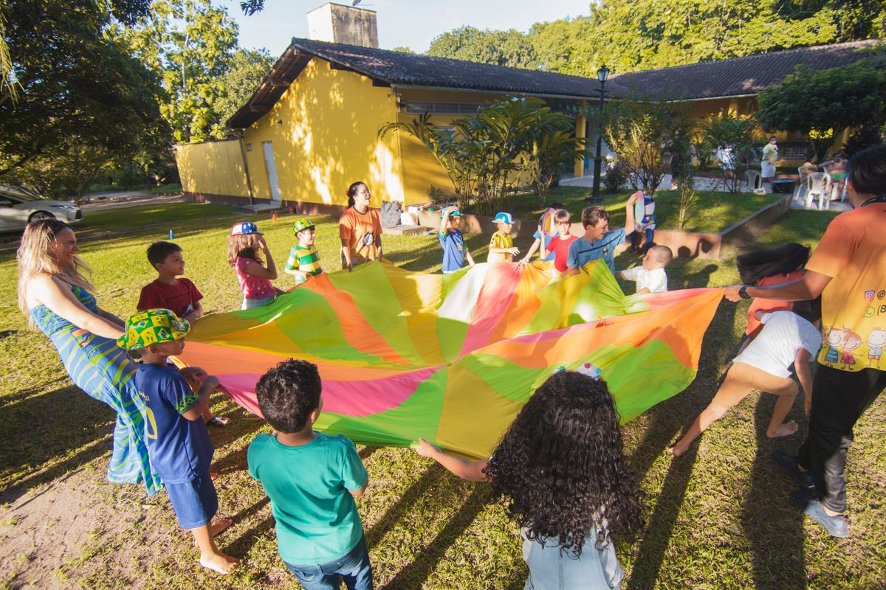

Visit The Mustard Seed Preschool & Child Care Center
A Christian preschool and child care center in D'Iberville for ages 1 to 4, with a set curriculum, a music program, and kindergarten readiness.
Address: 4247 Popp's Ferry Rd, D'Iberville, MS 39540
Hours: Monday to Friday 7:00 AM to 5:00 PM.
Phone: (228) 392-7405
Email: themustardseedps@aol.com
Gallery

All gallery photos are stock photos, labeled as such. They show young children playing and learning, not this preschool's students.
Contact
Call (228) 392-7405 Email themustardseedps@aol.com
The Mustard Seed Preschool & Child Care Center serves D'Iberville, MS. Questions? Call (228) 392-7405.